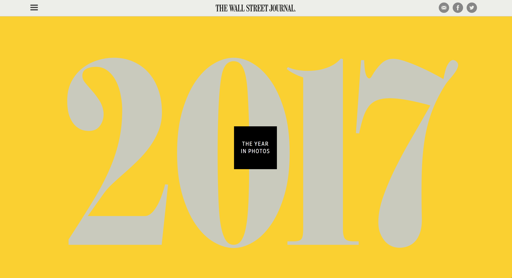
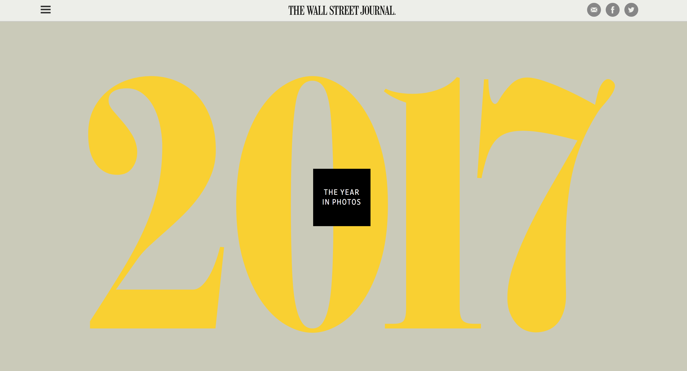
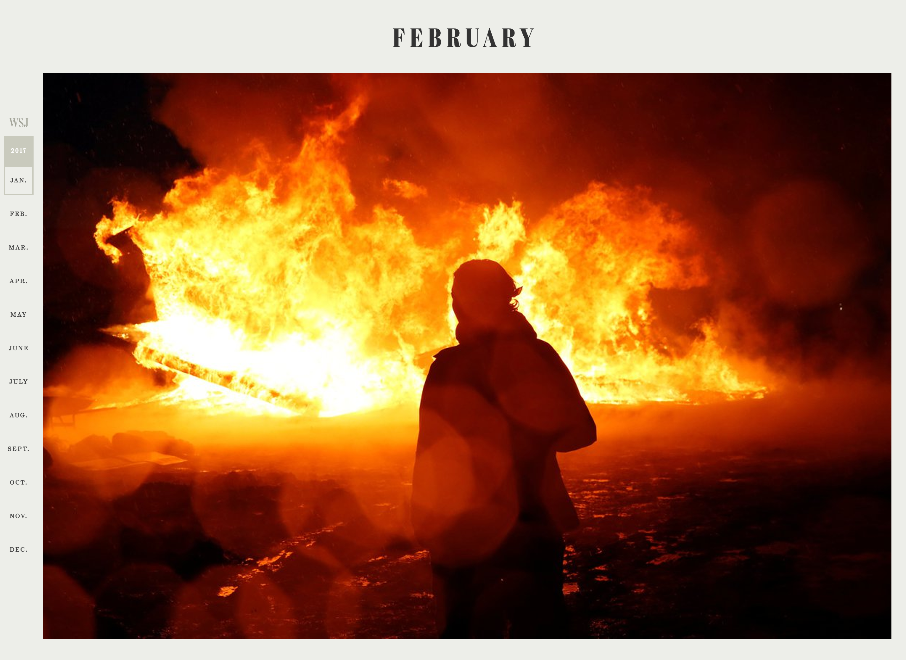

From sweeping political changes in Washington, Paris and other capitals to a total solar eclipse that swept across the U.S. for the first time in a century, 2017 was a year for the books. Of the two million images our photo editors look through each year, we've picked 100 of our favorites in this photo recap of the moments that captivated our shared imagination.
  